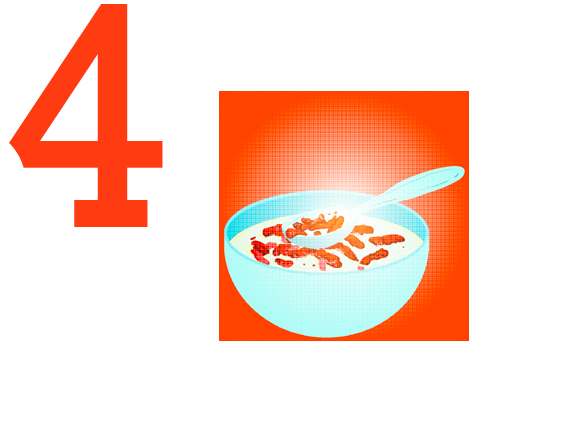
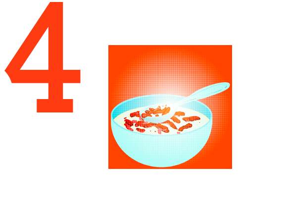

✦ INSPIRATION ✦
This project was an exploration of how to create interactive documentation that could exist both physically and digitally. During the COVID-19 quarantine, I was one of many people who resorted to snacking to overcome boredom and apprehensiveness during this difficult time. I got attached to peculiar food combinations during this process. Intrigued, I wanted to record it playfully as a means for me to look back on in the future.
PRINTED VERSION
The printed version would have pages printed on paper and clear acetone. The paper side will be a page listing the combination and noting my critique and commentary. The clear acetone pages function like a flipbook where the viewer can animate the frames through flipping back and forth. There will be two consecutive pages with one image on it. Each image will contain an element(s) of the combination, and the viewer will be able to layer the components together when they flip a clear page over the other.


 
 


INTERACTIVE WEB VERSION
Taking advantage of the image formats a web version could present, I incorporated animated illustrations as .gif images. Through hovering or tapping the center, the viewer can get an easter egg: an animated .gif of how to combine the foods.